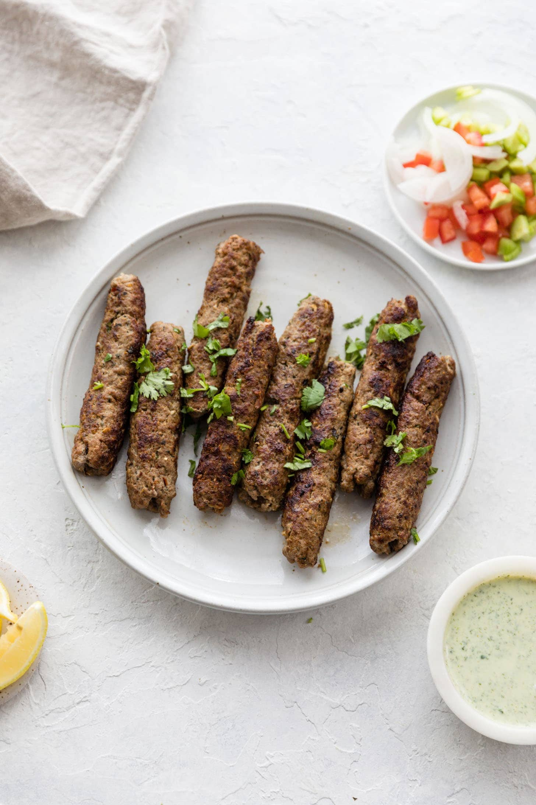

Seekh Kebab Recipe

Grilled lamb seekh kebabs that deliver a spicy and flavourful taste.
Ingredients
- 2lb lean ground lamb
- 2 chopped onions
- ½ cup chopped mint leaves
- ½ cup chopped cilantro
- 1 tbsp ginger paste
- 1 tbsp green chile paste
- 2 tsp ground cumin
- 2 tsp ground corriander
- 2 tsp paprika
- 2 tsp salt
- 1 tsp cayenne pepper
- 8 skewers
- ¼ cup vegetable oil
Directions
- Mix ground lamb, onions, mint leaves, cilantro, ginger paste and chile paste in one large bowl. Season with cumin and corriander powder, paprika, salt and cayenne.
- Refrigerate the mixture for at leaste 2 hours.
- Form and mold the lamb mixture into 8 equal portions around the skewers.
- Refrigerate the skewers until when ready to grill.
- Preheat outdoor grill and brush the grate with oil.
- Cook the skewers on the grill for around 10 minutes, turning regularly until all the sides are brown and there is no pink in the center.